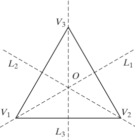
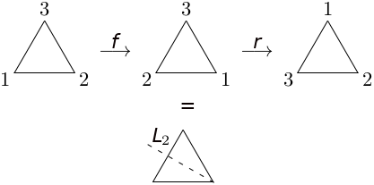
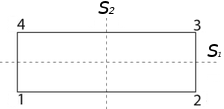
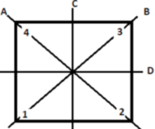
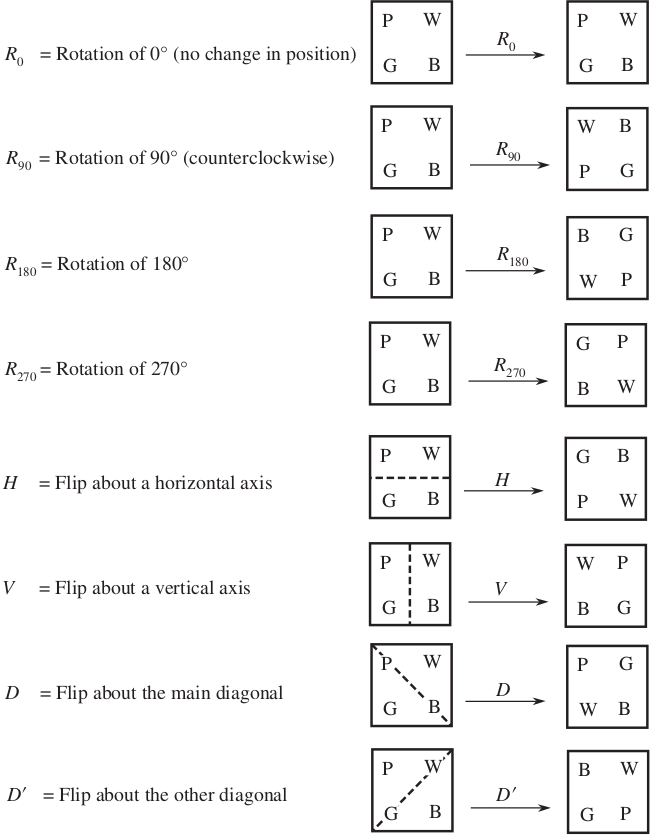
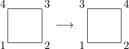
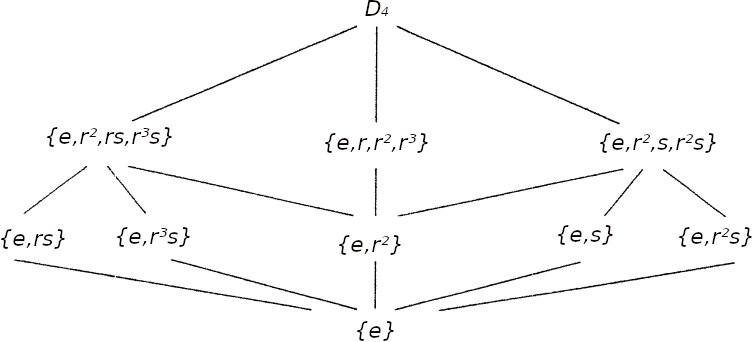

Dihedral groups
A lot of geometric objects possess a large amount of symmetry. Roughly speaking, this means that a change of the viewer’s perspective does not change what is seen. Equivalently, we can move the object instead. In this case we want to consider motions of the object that leave it apparently unchanged. A rigid motion (isometry) of the plane is a bijection from the plane onto itself that preserves distance. We call these rigid motions because they can be realized by moving the plane in three-dimensional space. If T is a subset of the plane (that is, a figure in the plane like an equilateral triangle), a symmetry of T is a rigid motion of the plane that takes T onto itself.
Let's start considering an equilateral triangle with center point O and vertices labeled V1, V2, and V3.
Notice that a counterclockwise rotation through 120° moves vertex 1 to the location vertex 2 has just vacated, and moves vertex 2 to location 3, and vertex 3 to location 1. We shall denote this rotation by r. Notice that if we ignore the labels of the vertices, after applying r the triangle is in the same position as it was before the motion. Note that if we apply r twice, that is, we rotate the triangle through 240°, the triangle again appears unchanged. We shall denote this rotation by rr, or r2 for short. r3 = 360° is the identical rotation.
So one symmetry followed by another is still a symmetry; note that ‘followed by’ here means functional composition, if we think of these rigid motions as functions from the plane onto itself.
There some more interesting symmetries. Consider the reflection through the line L3 which assigns to each point P the point P' which is the same perpendicular distance from L1 but on the other side. (If P is actually on the line, it is sent to itself). We could also think the reflection as rotating the plane on axis L3 through 180°. (A motion that occurs in three-dimensional space). This is rigid motion takes also the triangle onto itseld, and so it is another symmeric of the triangle that we call s3 (also indicated with f for flip).
Notice that s2 = e. We could also combine two different simmetries e.g. rs3 (where we mean by this juxtaposition the composition of these two functions, first s and then r).
Now this is just a reflection about the line L2. Similarly, fr looks like a reflection about the line L3.
These rigid motions (or symmetries) form a group with respect to mapping composition. There are a total of six elements in the group, and they may be described as follows:
e, the identity mapping, that leaves all points unchanged.
r, a counterclockwise rotation through 120° about O in the plane of the triangle.
r2 = r ∘ r, a counterclockwise rotation through 240° about O in the plane of the triangle.
A reflection s1 about the line L1 through V1 and O.
A reflection s2 about the line L2 through V2 and O.
A reflection s3 about the line L3 through V3 and O.
We call the set of these six symmetries the group of symmetries of the equilateral triangle; The multiplication table of the group is the following
| ∘ | id | r | r2 | s1 | s2 | s3 |
|---|---|---|---|---|---|---|
| id | id | r | r2 | s1 | s2 | s3 |
| r | r | r2 | id | s2 | s3 | s1 |
| r2 | r2 | id | r | s3 | s1 | s2 |
| s1 | s1 | s3 | s2 | id | r2 | r |
| s2 | s2 | s1 | s3 | r | id | r2 |
| s3 | s3 | s2 | s1 | r2 | r | id |
By comparing the multiplicative table for 𝓢3 we observe they coincide by letting
r = (1, 2 3)
r2 = (1, 3, 2)
s1 = (2, 3)
s2 = (1, 3)
s3 = (1, 3)
hence each rigid motion of the plane corresponds to a permutation of the indexes of the triangle. Thus the group of rigid movements of the plane can be identified with the group 𝓢3.
The groups we just examined is part of a larger class of groups known as dihedral groups.
The Klein four-group (or Viergruppe or the group of the rectangle) is the group under composition of the four rigid motions of a rectangle that leave the rectangle in its original location.
The four elements being the identity, the reflection s1 around the horizontal axis of the rectangle, a mapping that interchanges the vertices 1 and 4 and interchanges the vertices 2 and 3. Another element is the reflection s2 around the vertical axis of the rectangle, a mapping that interchanges the vertices 1 and 2 and interchanges the vertices 3 and 4. Repeating each of these mappings leaves the rectangle unchanged, so s12 = s22 = 1, the identity mapping. Performing first the reflection s1 and then the reflection s2 interchanges the vertices 1 and 3 and interchanges the vertices 2 and 4, so it amounts to a rotation r = ba of the plane around the center of the rectangle through an angle of π radians; and repeating this rotation leaves the rectangle unchanged, so r2 = 1 as well. On the other hand performing the two flips in other order really amounts to the same rotation, so r = s1s2 as well. These symmetries thus form a group of order 4, consisting of the identity mapping 1, the reflections s1 and s2 and the rotation r. The Cayley table (so named in honor of the prolific English mathematician Arthur Cayley, who first introduced them in 1854) of the group is the following
| ∘ | id | r | s1 | s2 |
|---|---|---|---|---|
| id | id | r | s1 | s2 |
| r | r | id | s1 | s2 |
| s1 | s1 | s2 | id | r |
| s2 | s2 | s1 | r | id |
7.6.1 Definition The dihedral group Dn is the group of symmetries of a regular n-sided polygon.
The dihedral group is defined by generators r,s and the relations an = e (n ≥ 3), s2 = 2 and rsrs = e (or srs−1 = r−1).
Dn consists of n counterclockwise rotations rk(2π/n) with k = 1, ..., n, around the center O of the polygon, correspondent to the angles
2π/n, 2 ⋅ π/n, 3 ⋅ 2π/n, k ⋅ 2π/n, ... n ⋅ 2π/n = id
Dn consists as well of n reflections with respect to the 'symmetry axes' of the polygon: if n is odd, the symmetry axes are the bisectors of two opposite sides, if n = 2k they are the k bisectors and k axes as it can seen from the figure below, where regular polygon with n = 5 (pentagon) and n = 6 (a hexagon )are shown if Fig. 1.
We have |Dn| = 2n. Since rigid motions of the plane can be thought as permutations of vertices, it results
Dn ⊆ 𝓢n
For n = 3 we already saw that D3 = 𝓢3, for n > 3
Dn ⊊ 𝓢n
since |Dn| = 2n and |𝓢n| = n!, and 2n ≤ n!, they are equal only for n = 3.
D5 is the group of symmetries of a regular pentagon. It has ten elements: e, four counterclockwise rotations (r1 = 72°, r12 = 144°, r13 = 216°, r14 = 288°) and the five reflections lk about perpendiculars from a vertex to the opposite side.
Let l be the reflection about the line ℓ1 in Fig. 1, and r the rotation through 72° degrees in a anti-clockwise sense about an axis through O perpendicular to the plane of the pentagon. All possible motions of the pentagon which leave it apparently fixed in space can be described in terms of r and l.
D5 = {e, r, r2, r3, r4, l, rl, r2l, r3l, r4l
D5 = ⟨r, l| r5 = e, l2 = e, lr = r4l⟩
Note: rb means: first b then r
All posible rotations can be represented as permutations in cyclic notation:
r1 = (1, 2, 3, 4, 5), r12 = (1, 3 , 5, 2, 4) r13 = (1, 4, 2, 5, 3),
r14 = (1, 5, 4, 3, 2), r15 = 1
If we let lk denote the reflection about line lk for k = 1, 2, 3 ,4 ,5, then the reflections in D5 appear as follows in cyclic notation:
l1 = (2, 5) (3, 4), l2 = (1,3)(4,5), l3 = (1,5)(2,4),
l4 = (1, 2)(3, 5), l5 = (1, 4)(2, 3)
Direct computations verify that
l1r1 = l3, l1r12 = l5, l1r13 = l2, l1r14 = l4
Symmetries of a Square
7.6.2 Example (D4). The dihedral group D4 is the group of symmetries of a square
It possesse 8 elements (for this is also called the octic group), which are
e = do nothing
r = rotate counterclockwise 90°
r2 = rotate counterclockwise 180°
r3 = rotate counterclockwise 270°
sA = reflect across line A
sB = reflect across line B
sC = reflect across line C
sD = reflect across line D.
To see the action of each symmetry, we can think the corners colored in blue, white, pink, and green.
Evey motion is equal to one of the eight symmetris listed above, for example suppose a square is repositioned by a rotation of 90° followed by a flip about the horizontal axis of symmetry.
Thus, we see that this pair of motions—taken together—is equal to the Flip about the main diagonal. This observation suggests that we can compose two motions to obtain a single motion. And indeed we can, since the eight motions may be viewed as functions from the square region to itself, and as such we can combine them using function composition. With this in mind, we write H R90 = D because in lower level math courses function composition f ∘ g means “g followed by f”. The eight motions R0, R90, R180, R270, H, V, D, and D', together with the operation composition, form a mathematical system called the dihedral group of order 8 (the order of a group is the number of elements it contains). It is denoted by D4. Rather than introduce the formal definition of a group here, let’s look at some properties of groups by way of the example D4.
To facilitate future computations, we construct an operation table or Cayley table for D4 below. The circled entry represents the fact that D = HR90. (In general, ab denotes the entry at the intersection of the row with a at the left and the column with b at the top.)
Note that r4 = e and s2 = e and sr = r−1s.
Caley's table is the following
| 1 | r | r2 | r3 | s | rs | r2s | r3s | |
|---|---|---|---|---|---|---|---|---|
| 1 | 1 | r | r2 | r3 | s | rs | r2s | r3s |
| r | r | r2 | r3 | 1 | rs | r2s | r3s | s |
| r2 | r2 | r3 | 1 | r | r2s | r3s | s | rs |
| r3 | r3 | 1 | r | r2 | r3s | s | rs | r2s |
| s | s | r3s | r2s | rs | 1 | r3 | r2 | r |
| rs | rs | s | r3s | r2s | r | 1 | r3 | r2 |
| r2s | r2s | rs | s | r3s | r2 | r | 1 | r3 |
| r3s | r3s | r2s | rs | s | r3 | r2 | r | 1 |
The symmetries of the square can be written as permutation as follows
e = (1)
r = (1234)
r2 = (13)(24)
r3 = (1432)
sA = (24)
sB = (13)
sC = (12)(34)
sD = (14)(23)
Unlike the equilateral triangle, no symmetry of the square can interchange vertices 3 and 4 leaving 1 and 2 fixed.
On the other hand 𝓢4 possesses the permutation
thus D4 is a subgroup of 𝓢4. There are 8 symmetries of the square, and 4! = 24 elements of 𝓢4, so the D4 is a just a third of 𝓢4.
We indicate with r the rotation of 2π/n; This has order n and it generates the subgroup of all rotations, since any rotation is a rk of it
rk = rk2π/n, k = 1, ..., n
Furthermore the order of the rotation rk is n/d with d = gcd(n,k) (see the treatement of nth roots of unity).
The order of every reflection fi is clearly 2. The group Dn for n > 2, is non-Abelian.
7.6.3 Proposition. Let r the rotation of 2π/n around the center O of a regular polygon and f an arbitrary reflection. Then the dihedral group Dn is generated by r and f and it results
Dn = ⟨r,s⟩ = {id, r, r2, ...., rn − 1, s, rs, r2s, ..., rn − 1s}
Proof. We are going to prove that every symmetry of the polygon can be written in the form
risk, i = 0, ...., n − 1, k = 0,1
having indicated with s (without loss of generality) the reflection around the vertex 1 of the polygon. Looking at figure 1, It is possible to identify r with the permutation (1, 2, ...,n) and s (= s−1) with the permutation
s = s−1 = (2, n)(3, n − 1) ⋅⋅⋅ (k, n − k + 2)(k + 1, n − k+1)
n = 2k + 2 if n is even
n = 2k + 1 if n is odd
(For the pentagon in fig. 1, we have s = (25)(34) and s−1 = (52)(43) hence s = s−1)
from
srs−1 = (1, n, n − 1, ..., 3, 2) = r−1
which is obtained from the rule for calculating the conjugate (e.g for the pentagon case we have (15432) = r−1). Then we have
sr = rn − 1s
that along with rn = e and s2 = 1, yields to the following relations, which guarantee the expected result
rαrβ = rγ, γ ≡ α + β (mod n)
rα(rβf) = rγs, γ ≡ α + β (mod n)
(rαs) rβ = rδs, δ ≡ α + (n − β) (mod n)
(rαs) (rβf) = rδ, δ ≡ α + (n − β) (mod n).
1) is derived by γ = α + β + kn, since rn = e we have: rγ = rα rβ rkn = rα rβ.
To derive 3) notice that f does not commute with r -- it inverts r as you switch the order srβ = sr−β and r-β also = rn - β, so to obtain 3) we start by rα s rβ and since srβ = r−βs we've 3). □
7.6.4 Proposition. Dn for n > 2 is not an Abelian group.
Proof. Since sr = rn − 1s ≠ r s for n > 2.□
Matrix representation
Since every element of Dn is a rigid motion, it can be represented as well by an orthogonal matrix. Remember a rigid motion of the plane is really a bijection from the plane onto the plane, which preserves distance. Now the plane can be considered algebraically as the set ℝ2 of all ordered pairs of real numbers. We denote with P(x, y) the point P in the plane with coordinates (x, y). How then can we represent rotation (about the origin, say) through angle θ? To answer this, suppose that P(x, y) is rotated through angle θ to point P'(x', y'). If we represent P by the polar coordinates (r, φ) then
x = r cos φ and y = r sin φ
and so
x' = r cos (θ + φ) and y' = r sin (θ + φ)
By trigonometric sum formulas, we obtain
x' = r cos φ cos θ − r sin φ sin θ = x cos θ − y sin θ
y' = r cos φ sin θ + r sin φ cos θ = x sin θ + y cos θ.
These two equations describe the transformation P (x, y) → P'(x' , y'), which is the rotation through the angle θ about the origin.
A particularly nice way to look at this transformation is as a matrix multiplication. Consider the 2 × 2 matrix
and the 2 x 1 arrays P = (x, y) and P' = (x' y'). Then we have that P' = RP. Note that we think of P and P' as colums in order to make the matrix multiplication work.
For reflection, consider the matrix
Note that FP = (−x, y) and so we see that multiplication by F exactly describes reflection of the plane through the y-axis.
Then in Dn we have
It results as it can be easily verified Rn = I = S2 and SR = Rn −1S. By identifying r with R and s with S, the subgroup generated by the matrices R, S coincides with the dihedral group Dn. Thus every group Dn can be thought as a subgroup of the orthogonal group (O2(ℝ), ⋅).
7.6.4 Example. Determine the elements of D4 and their order.
Solution. The group is generated by the rotation r and the reflection s. These satisfy r4 = s2 = e and srs−1 = r−1, so that every element has a unique form as rd sb with 0 ≤ d < 4, 0 ≤ b < 2. There are five elements with order 2: s, r2, sr, r3, sr2 hence five subgroups of order 2: ⟨x⟩ has order 2 for each x in that list we gave. There are two elements of order 4: r, r3. ⟨r⟩ = ⟨r3⟩ = {e,r,r2,r3} is a cyclic subgroup of order 4. These are all the distinct subgroups of D4.
⟨r3⟩ = {e, r2}, ⟨s⟩ = {e,s}, ..., etc.
It follows from the relation sri = rn − is that an element of the form ri commutes with s if and only if ri = rn − i and this holds if n − i = i that is in the case i = 0 or n = 2i.
The conjugacy classes of D4 consider the element r:
rrr−1 = r
r2r(r3)−1 = r
srs−1 = srs = r−1 = r3 (we used the relation sr = r−1s)
(rs)r(rs)−1 = (rs)r(s−1r−1) = (rs)(rs)r3 = er3 = r3
(r2s)r(r2s)−1 = (r2s)r(s−1r−2) = (r2s)(rs)r2 = rr2 = r3
(r3s)r(r3s)−1 = (r3s)r(s−1r−3) = (r3s)(rs)r = r2r = r3
Thus the conjugacy class of r is [r] = {r,r3}.
Now consider the element s. We have that:
sss−1 = s
(rs)s(rs)−1 = (rs) s (s−1r3) = (rs)(r3) = r2s
(r2s)r(r2s)(r2s)−1 = (r2s) s (s−1r2) = (r2s)(r2) = s
(r3s)s(r3s)−1 = (r3s)s(s−1r) = (r3s)(r) = r2s
We can partition D4 into its conjugacy classes by:
D4 = [1] ∪ [r2] ∪ [r] ∪ [s] ∪ [rs] = {1} ∪ {r2} ∪ {r,r3} ∪ {s,r2 s} ∪ {rs,r3s}
7.6.5 Lemma. The center of Dn is {e} or {e, rn/2} depending on wheter n is even or odd.
Proof. Indeed from sri = rn − is for i ∈ {1, 2, 3, ..., n}, we see that the element ri commutes only when i = 0 or n = 2i.□